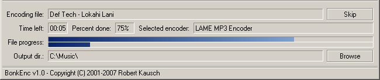

Jeitsi fre:ac azken bertsioa SourceForge-tik edo fre:ac etxeko-orrialdea-tik. Ezarri programa eta abiarazi. Orain jarri audio CD bat zure CD/DVD gidagailuan. CD bideak arrunt berezgaitasunez erakutsiko dira fre:ac-ren leiho nagusian. Ez bada horrela, klikatu "Gehitu audio CD edukiak" botoia bideak lan-zerrendara gehitzeko.

CD-entzako izenak eskuz sartu behar izaterik nahi ez dugunez onlineko freedb CD datubasean eskabide bat egin dezakegu izenak gure ordez bete ditzan. Hau egiteko besterik gabe "Datubasea" menura joan eta "CDDB datubase eskabidea" hautatu behar dugu. Honen antzeko ikusleiho bat ikusi behar dugu:

Programak berezgaitasunez betetzen ditu bidearen argibideak:

Behin hau eginda programarentzako ezarpen orokorrak itxuratu behar ditugu. Joan "Aukerak" menura eta hautatu "Ezarpen Orokorrak". Honek hurrengo elkarrizketa erakusten du:

Lehen ikusleihoan kodeatzailearen ezarpenak ezarri ditzakegu. fre:ac-ren berezkoa LAME MP3 kodeatzailea erabiltzea da. Hau erabiliko dugu eskuliburu honetan. Zihurtatu "Kodeatu Aidean" aukera hautaturik dagoela. Ezarri ere zure irteera zuzenbidea, kodeatutako MP3-ak nora joango diren tokia. Nik zuzenbide hau nire musika zuzenbidean ezarri dut.
Agiri izen eredu kutxan agiri izenak nola heuskarrituko diren ezarri dezakezu. Niri neureak zuzenbideetan edukitzea gustatzen zait non artista eta bildumaren izena zuzenbidearen buruan agertzen diren eta agirizenak, bide zenbakia bere izenburua jarraian duela izango diren. Hortaz dagokion agiri izen eredua hau da "<artist> - <album>\<track> - <title>". Hortaz kasu honetan agiri izenak honela ikusten direla amaituko dute:

Erabiltzaile aurreratuentzako badaude aldatu daitezkeen beste ezarpen batzuk norbere gogoen eta beharretara finkatzeko.
Orain LAME kodeatzailea itxuratu behar dugu MP3 irteera on bat edukitzeko. Joan "Aukerak" menura eta hautatu "Itxuratu hautaturiko kodeatzailea".

Azpian erakusten den leihoaren antzeko bat ikusi behar duzu.

fre:ac LAME kodeatzailearentzat aurrezarpen ugarirekin dator. Hauetako bakoitzak ezarpen ezberdinak ematen dizkio kodeatzaileari ontasun maila ezberdinekin. Ezarpen handiena (Adib. "Hertzekoa") MP3-ak toki gehiago hartuko du zure diska gogorrean baina soinua hobea izango da. Nik nahiago dut norbere ezarpenak erabiltzea eta ontasunak banaka ezartzea. Ezarpen hauek hemen ikusi ditzakezu. Oraingoz utzi aurrezarpena Estandarrean. Sakatu Ongi eta zein bide nahi ditugun erauztea eta kodeatzea hautatu dezakegu.
Orain berriro ikusleiho nagusian gaude eta zein bide nahi ditugun erauztea eta kodeatzea hautatu dezakegu. Bide bakoitzaren ezkerrean hauta kutxatila bat dago. × bat duen bakoitza erauzteko eta kodeatzeko hautatua dago. CD osoa erauztea nahi dudanez bostak utziko ditut hautaturik, baina bide bakarra erauztea nahi baduzu bat hori ezik beste guztiak deshautatu behar dituzu.
Orain kodeaketa garapena hasiko duen Irakurri botoi handia sakatu dezakegu.

Leihoaren behekaldea garapen barra erakusten hasiko da:
Abesti bakoitza amaitzen doan heinean, lan-zerrendatik (izenburu guztiak erakusten diren tokia) berezgaitasunez kenduko dira amaitutako abesti guztiak.
Zorionak! Zure lehen CD-a erauzi eta kodeatu duzu fre:ac-rekin!